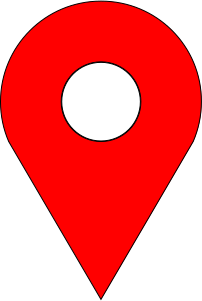
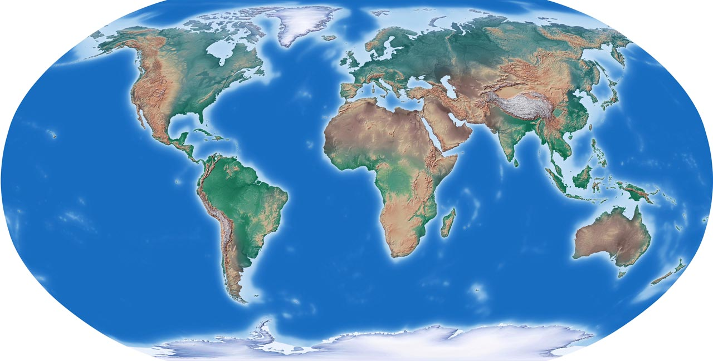

kies een locatie

De moderne wereldwonderen
De selectie van de zeven wereldwonderen zijn namelijk geen 'moderne' gebouwen. Omdat de zeven klassieke wereldwonderen nagenoeg allemaal niet meer bestaan, heeft men besloten om de moderne wereldwonderen te kiezen.
Modern slaat op de periode waarin wij ons bevinden. Klassiek slaat ook op de periode van de klassieke oudheid waarin toen namelijk al de zeven wereldwonderen zijn gekozen.
In de lijst staat bijvoorbeeld een stad die uit de rotsen is gehakt, en een marmeren mausoleum dat 'een traan op de wang van de tijd' werd genoemd toen het was voltooid.
Dit is de lijst van de nieuwe wereldwonderen:
- Chichén Itzá in Mexico
- Machu Picchu in Peru
- Cristo Redentor in Brazilië
- Colosseum in Italië
- Rotswoningen in Petra
- Taj Mahal in India
- Chinese Muur in China